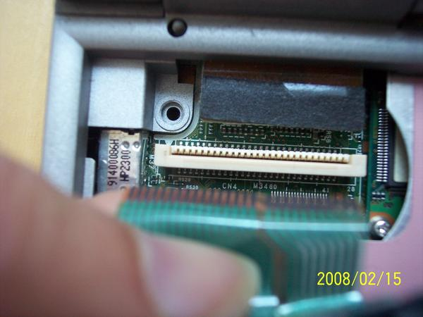
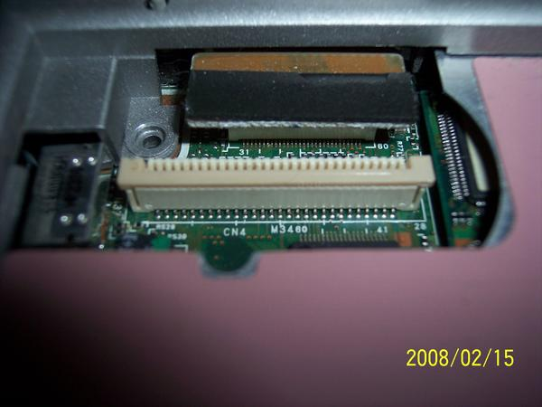
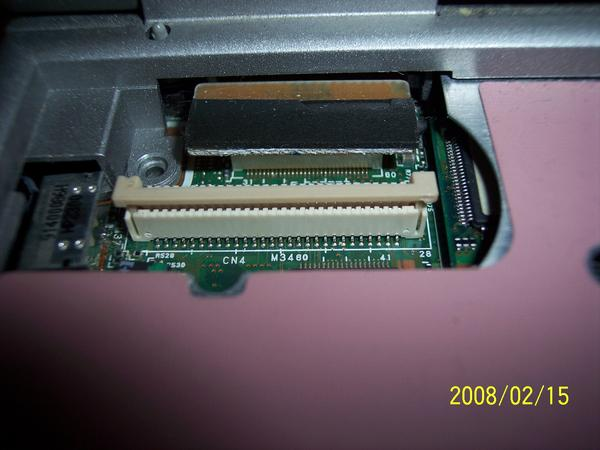
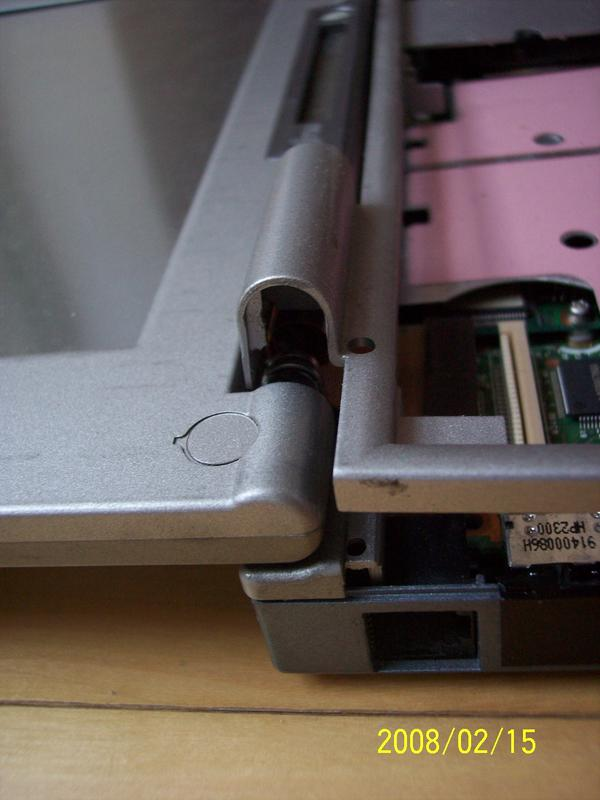
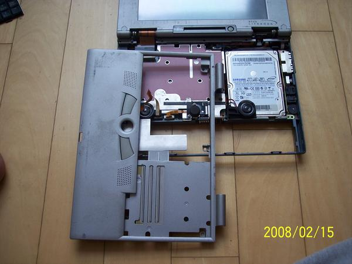

POSTS
후지쯔 B142 분해하기
분해는 http://sandbox.cz/~covex/hw/b112/ 를 참고하면 되는데
(혹은
http://pds4.egloos.com/pds/200701/14/82/fujitsu%20lifebook%20b112_b142%20disassembly.zip)
원본글에 대한 보충설명을 하겠다.
원본글을 반드시 먼저 읽어보시길.
원본글처럼 나사를 모두 풀면 키보드가 분리되는데
본체와 키보드 케이블을 본체 커넥터에서분리해야 한다. 케이블을 잡고 살며시 당기면 빠진다.
반드시 케이블의 뿌리부분을 잡고 당겨야 한다. 아니면 케이블이 끊어질 수 있다.

[케이블을 빼는 모습]
다시 넣을때는 잘 안들어간다. 왜냐하면 커넥터가 잠김상태이기 때문이다.

[잠긴 모습]
커넥터의 레버를 위로 올려서 ‘풀림’상태로 해줘야 한다.

[잠김이 풀린 모습] –> 위의 사진 2개를 비교해 보면 이해될 것임.
이제 본체 커버를 열어야 하는데. LCD를 거의 수평으로 눕힌 후 상판을 살짝 들면 쉽게 빠진다.

[상판을 들어낸 모습]
HDD만 교체하려 할 때는 상판을 완전히 분리할 필요없다.
상판과 메인기판 사이에는 마우스버튼 연결케이블이 있는데 이것을 길이가 충분해서 아래와 같이 상판을 90도로 돌리면 HDD 교체작업 공간이 충분히 나온다.
절대 상판을 완전분리하려 하지 마라. 반드시 후회할것이다. ㅠㅠ

[상판을 들어 90도로 돌린 모습]
B142 는 부품들이 아주 작아 작업하기 힘들다. 절대 무리한 힘을 주지 말것!
Bye Bye~ B142
<기타링크>
service planning guide for lifebook b112.pdf
fujitsu lifebook b112_b142 disassembly.zip
New life for Lifebook B142 with Ubuntu 6.10
- Fujitsu Lifebook B112/B142 disassembly
-
- Linux on the Fujitsu LifeBook B142
-
- XFree86 4.x.x drivers for Fujitsu Lifebook B142
-
- Linux Touch Panel Drivers for the Fujitsu Lifebooks B112/B142/B2130
-
- Lifebook B Series Touchscreen Driver
-
- HOWTO Install Gentoo without a livecd - Gentoo Linux Wiki
-
- Index of /brutalware
-
- AMIGO LINUX OS